DESeq2 Analysis with R: Part 02
Mirela Balan
Wed Apr 5 07:27:09 2023
Goals:
- going over the DESeq2 workflow
- indepth explanations for:
- general formating for data and metadata
- factorization
- pre-filtering
- RNA-seq data distribution
- modelling data
- data transformation
- size factors and normalization
- dispersions
- extracting the results
1. Filtering data - 25 min
Load data, metadata, check samples
dds <- data + metadata + design
suppressPackageStartupMessages({
library("tidyverse")
library("DESeq2")
library("pheatmap")
library("ashr")
})- Load data and metadata
#loading data with tidyverse
data <- readr::read_tsv("../data/myeloma/myeloma_counts.tsv", col_types = cols(gene_id="c", .default= "i"), col_names=TRUE)
data <- column_to_rownames(data, var="gene_id")
#loading metadata (sample sheet) with tidyverse
metadata <- readr::read_tsv("../data/myeloma/myeloma_meta.tsv", col_types = list("c", "f", "f"), col_names=TRUE)
# Same as:
# metadata %>% mutate(celltype = factor(celltype))
# metadata %>% mutate(condition = factor(condition))
metadata <- metadata %>% column_to_rownames("sample") # sample -> rownames
#preview your data and metadata
data %>% head()
data %>% dim()
metadata %>% head()
metadata %>% dim()
#check if the col and rows are in the same order:
all(rownames(metadata) == colnames(data))- Make design and create the DDS object
#create a more complex experimental design
my_design <- ~celltype + condition
#make dds obj
dds <- DESeqDataSetFromMatrix(countData=data, colData=metadata, design= my_design)1.1. Sample filtering - 15 min
Previously you noticed that the PCA shows a problem with our data.
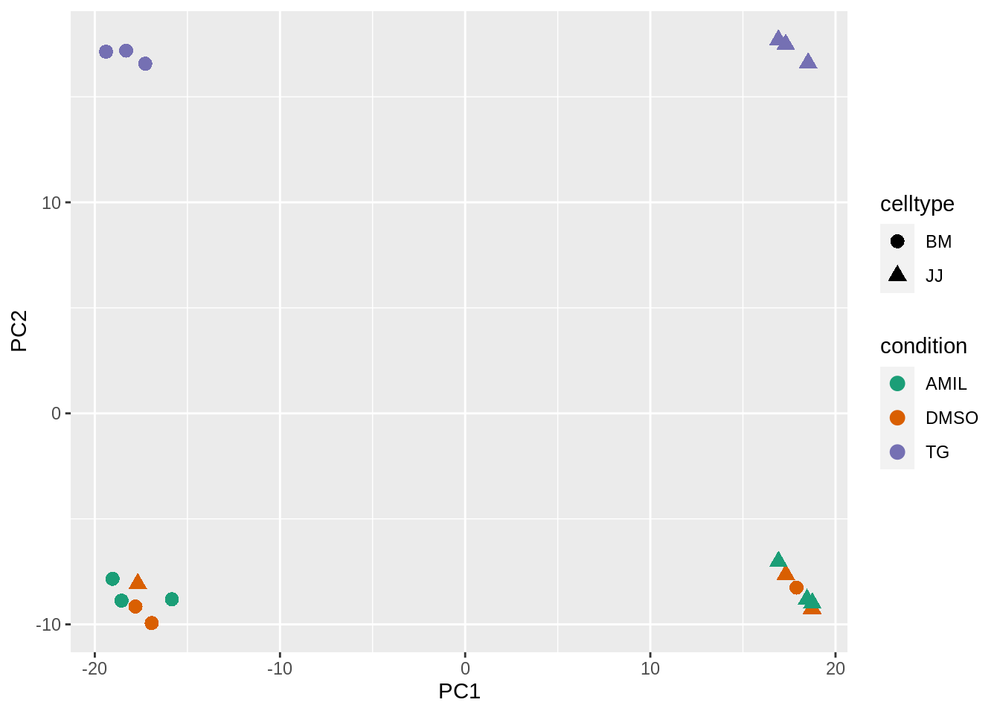
Poll 1: What do you think about this PCA plot? Does it need to be fixed? How would you do it? - 5 min
Task 1: Let’s fix the data by removing the problematic samples and visualize the resulting PCA:
# select the wrong samples from the dds object (columns: 1 and 7), then drop it:
dds_clean <- dds[, -c(column_number_sample1, column_number_sample2)]
# plot the PCA using the the new dds object (can use yesterday's code)
# first get the counts out of the dds object (): counts(dds)
# use log2() on the counts - or use rlog() on the dds object!
# plot the PCA#remove the samples from data and metadata:
dds_clean <- dds[, -c(1,7)]
#or
#dds_clean2 <- dds[, -which(colnames(dds) %in% c("JJ_CTRL_1", "BM_CTRL_1"))]
rld_PCA_clean <- rlog(dds_clean, blind = TRUE) %>% plotPCA(intgroup=c("condition", "celltype"), returnData=TRUE)
# cosmetic changes:
percentVar_clean <- round(100 * attr(rld_PCA_clean, "percentVar"), 1) # rounded values for each axis of PC variance
rld_PCA_clean %>% ggplot(aes(PC1, PC2, color=condition, shape=celltype)) +
geom_point(size=3) +
scale_shape_manual(values=c(3, 1))+ # change shapes of symbols
scale_size_manual(values=c(2, 2))+ # change sizes of symbols
xlab(paste0("PC1: ",percentVar[1])) +
ylab(paste0("PC2: ",percentVar[2]))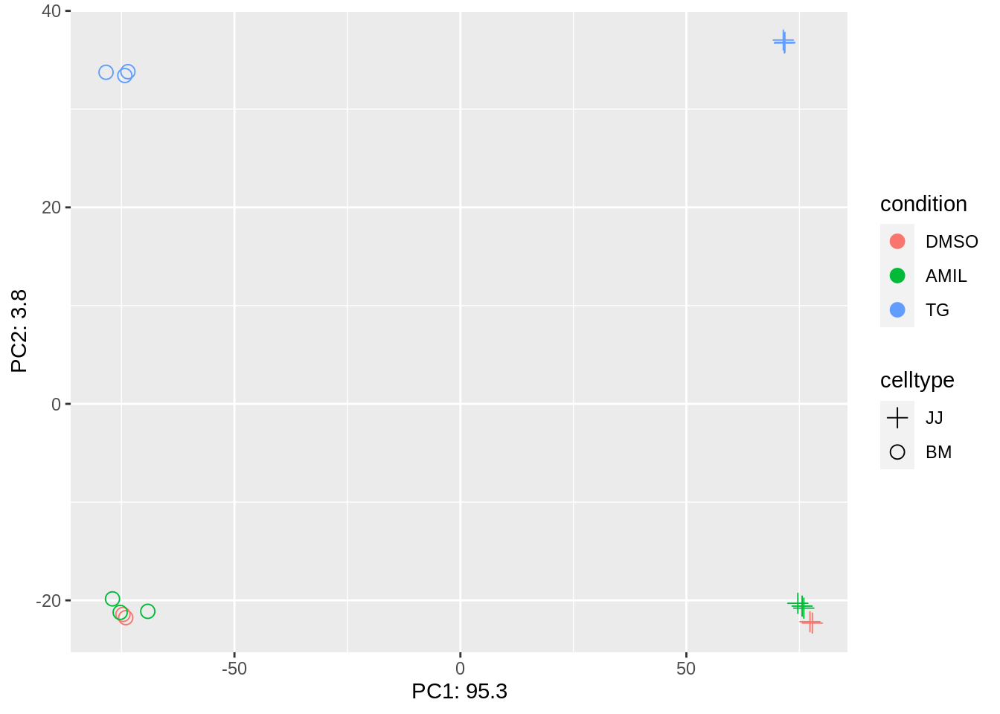
1.2. Feature filtering - 10 min
- filtering: manual or automatic
- helpful but not necessary to remove rows/genes that have very low
counts (very unlikely to have biological meaning)
- arbitrary threshold: < 1, < 10
- reduces the memory size that the ‘dds’ object occupies => increases the speed of transformations and calculations
Task 2: Filter out the genes that have a total amount of only zero or 1 counts:
# find which rows in the counts of the dds object have only zero or 1 counts overall (= sum of rows is zero or 1)
# on the counts from dds object, find out the sum of rows; keep them if > 1
keep <- rowSums() > 1
# filter out the unnecessary rows
dds <- dds[keep, ]
Discussion: What type of object is ‘keep’?:
#decide on the threshold you want to use (= the minimum number of counts you want to keep)
keep2 <- rowSums(counts(dds_clean)) > 1
cat('genes before filter: ', nrow(dds_clean), '\n') # prints the number of rows you have before the filtering## genes before filter: 57905# keep the desired rows
fdds_clean <- dds_clean[keep2, ] # most people keep the 'dds' name, but I will change it to help you differentiate between the different steps and learn. But doing this will fill up your memory.
cat('genes before filter: ', nrow(fdds_clean), '\n') # prints the number of rows you have after the filtering## genes before filter: 27351Notice how many rows you have dropped. In this case you are left only with 47.23 % of the initial number of rows!
2. Brief overview and (semi-)deep dive into concepts - 25 min
The steps required to do differential expression analysis using DESeq2 package (with default parameters):
# make the DESeqDataSet (dds) object:
dds <- DESeqDataSetFromMatrix(countData = matrix_with_count_data,
colData = dataframe_with_sample_information,
design = what_variables_interest_you)
# explore data & QC: transform data, plot (filtering, PCA, heatmap)
***********************************************************************
# perform statistical analysis
dds <- DESeq(dds)
# extract results
res <- results(dds)
Things are a bit more complicated in reality - an interative process.
DESeq2 workflow
Know your starting data and what you want to achieve with it
Have a working log where you keep track of all the information regarding the experimental design, the output from the sequencing, the purpose of the analyses, the analysis steps, the observations and all the decissions that you took during the analyses
e.g. does the experimental design and the number of biological repeats allow you to apply certain statistical analyses? What did the QC report of the sequencing say? Do you see the expected sample separation on PCA? Did you find a problem that forced you to make decissions such as dropping samples? Using a certain unusual threshold?
can use R notebooks as working logs - it is a place to experiment. But pay attention to not getting mixed up in the data!!
For every step:
- examine what you have initially (data and the format)
- know your next step and how the outcome should look like
- apply the transformation to get the result
- examine what you got and see if it is what you wanted
2.1.a. count data
- usually named ‘data’, ‘counts’
- a matrix with raw counts - not normalized, not transformed; integers
- to explore: head(data), dim(data), str(data), summary(data)
2.1.b. information about the samples
- usually named ‘metadata’, ‘colData’
- dataframe with all known useful information about the samples: name, condition (control/treatment, WT/KO/KD/OE), batch/ sequencing day, gender, age
- to explore: head(metadata)
- rows of the metadata should be named with sample names (important for downstream steps)
- column names of the data should be identical and in the same
order with the row names of the metadata!:
all(colnames(data)==rownames(metadata))should output ‘TRUE’
Understanding factors
used to represent categorical data
stored as integers that have associated labels: R sorts the labels alphabetically
1 2 3 AMIL DMSO TGcan be:
- ordered: small < normal < large; sand < pebels < stones < boulders;
- unordered: DMSO, TG, AMIL; WT, KO-1, KO-2;
levels = predefined factors; reference level = the 1st level
the order in which the factors are ordered matters:
- for plotting: 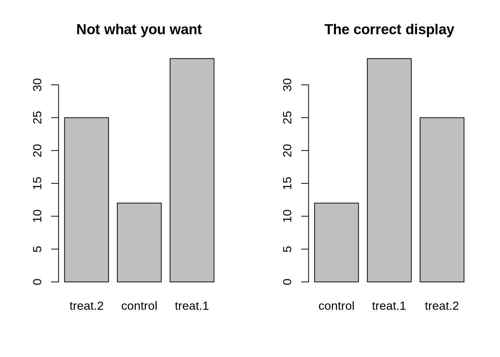
- for statistics: for DE analysis, DESeq2 compares all other levels within a variable with the 1st level. So if they are mixed, instead of comparing ‘treatment1 to control’ and ‘treatment2 to control’, you might end up with unexpected results!
Factor order
- how to reorder factors:
# or in the dds object, if you only care about what is the reference level:
dds$condition <- relevel(dds$condition, ref='DMSO')
# or in the dds, if you want a specific order for all of them
dds$condition <- factor(dds$condition, levels = c ('DMSO', 'TG', 'AMIL'))
# don't reorder the factors, but then remember to use the 'contrast' arguments in the results() function
Task 3: Please reorder factors with ‘DMSO’ as baseline - 2 min
This is the order of the factors before and after re-arrangement:
#initial factor arrangement:
dds_clean$condition## [1] DMSO DMSO AMIL AMIL AMIL DMSO DMSO AMIL AMIL AMIL TG TG TG TG TG
## [16] TG
## Levels: DMSO AMIL TG#rearrange factors
dds_clean$condition <- relevel(dds_clean$condition, ref='DMSO')
dds_clean$condition## [1] DMSO DMSO AMIL AMIL AMIL DMSO DMSO AMIL AMIL AMIL TG TG TG TG TG
## [16] TG
## Levels: DMSO AMIL TG
2.1.c. experimental design
- contains variables which will be used in data modeling for estimating dispersions and the log fold changes.
- formula:
- the names used are the names of the columns of the metadata
- add the needed variables, with the one you are most
interested in explaining at the end
- e.g. ‘~ celltype + condition’ = measure the effect of condition, while controlling for cell type-induced differences
my_design <- ~ celltype + condition
2.1.d. dds object
All that is left now is to make the dds object:
dds <- DESeqDataSetFromMatrix(countData=data, colData=metadata, design=my_design) - dds object stores:
- read counts (data) - call it with
counts(dds) - sample info (metadata) - call it with
colData(dds) - intermediate estimated quantities - during statistical analysis
- more additional features that you can add manually to the metadata
columns of a newly constructed object:
mcols(dds) <- DataFrame(mcols(dds), my_dataframe) - every time you change anything about the ‘data’, ‘metadata’ or ‘design’, you have to re-create the dds object!
- read counts (data) - call it with
Break - 10 min
3. Data exploration, visualization and QC - 20 min
To explore your data further and to create informative, easy to interpret visualizations, the data needs to be transformed before plotting.
Data transformation: log and rlog
DESeq2 needs as input raw counts for statistical testing, but for some stages of visualization or downstream analysis, you need transformed data.
- logarithmic data - mostly in visualization because it reduces the large dynamic range of the data (usually log2(count+1)).
Task 4.a): Do a logarithmic transformation of the first 4 samples (columns) and look only at the output before and after, only for the first 4 samples
# look at the first rows of the counts of the first 4 samples from the dds object
# transform the *dds counts* using a log() function
# look at the first rows of first 4 samples from the transformed dataprint('dataset with counts before transformation (raw counts):' ) ## [1] "dataset with counts before transformation (raw counts):"counts(dds_clean)[,1:4] %>% head(n=3)## BM_CTRL_2 BM_CTRL_3 BM_AMIL_1 BM_AMIL_2
## ENSG00000000419 1792 2368 2365 4808
## ENSG00000000457 614 854 623 585
## ENSG00000000460 961 1280 937 1247print('dataset with counts after logarithmic transformation:' ) ## [1] "dataset with counts after logarithmic transformation:"counts(dds_clean)[,1:4] %>% log(base=2) %>% head(n=3)## BM_CTRL_2 BM_CTRL_3 BM_AMIL_1 BM_AMIL_2
## ENSG00000000419 10.807355 11.209453 11.207624 12.231221
## ENSG00000000457 9.262095 9.738092 9.283088 9.192293
## ENSG00000000460 9.908393 10.321928 9.871905 10.284246
- Regularized logarithm (RLOG) transform takes in consideration prior information about all the samples in the experiment. It is slower.
Task 4.b): Do a rlog transformation of the first 4 samples (columns) of the dds object and look at the output
# transform the *dds object* using the rlog() function
# look at the first rows of first 4 samples from the transformed data## [1] "dataset with counts after RLOG transformation:"## BM_CTRL_2 BM_CTRL_3 BM_AMIL_1 BM_AMIL_2
## ENSG00000000419 10.741725 10.808387 11.074031 11.724421
## ENSG00000000457 9.186347 9.311043 9.236005 9.036658
## ENSG00000000460 9.860759 9.934575 9.866865 10.038373
counts(dds_clean)[,c(3,10)] %>% plot()
counts(dds_clean)[,c(3,10)] %>% log(base=2) %>% plot()
assay(rld_clean)[,c(3,10)] %>% plot() # 'assay()' allows you to extract the counts from the 'rld' object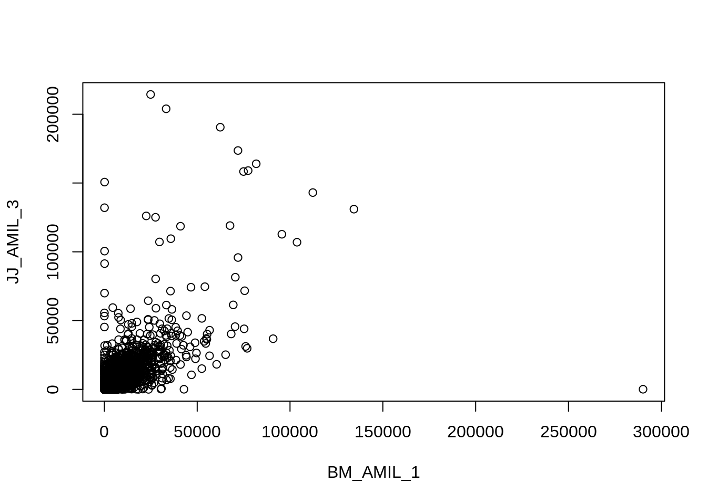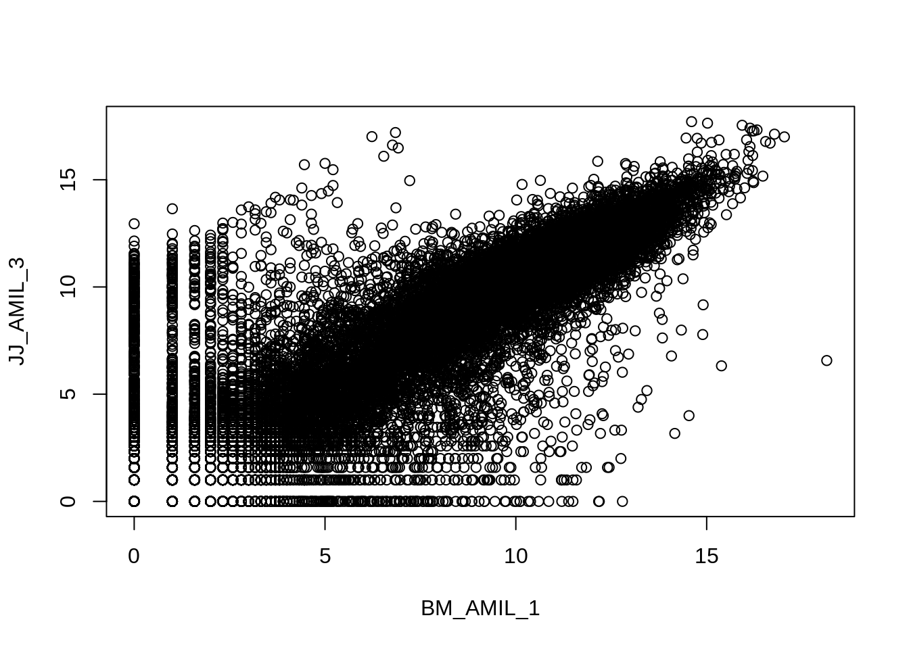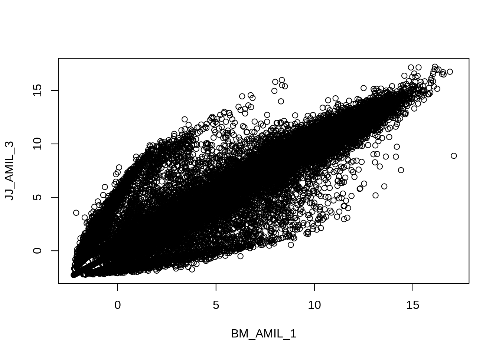
Where can we see the difference between the log and rlog transform?
df1 <- data.frame(rlg_base2=log2(counts(dds_clean)[, 1]+1))
df2 <- data.frame(rlg=assay(rld_clean)[, 1])
df <- merge(df1, df2, by=0) # merge the 2 dataframes by rownames
df %>% ggplot(aes(x=rlg_base2, y=rlg)) +
geom_point(size=1, shape=3) +
ggtitle("Comparing 'log2(n+1)' and 'rlog' data transformation") +
xlab("log2(n+1) transformation") + ylab("rlog transformation") +
theme(plot.title = element_text(hjust=0.5))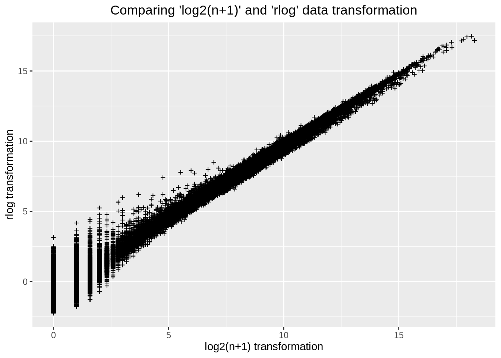
Does it make a difference to the visualizations?
th <- data.frame(round(log(counts(dds_clean)+1)))
th.pca <- prcomp(t(th))
pca_data_perc=round(100*th.pca$sdev^2/sum(th.pca$sdev^2),1)
df_pca_data=data.frame(PC1 = th.pca$x[,1], PC2 = th.pca$x[,2], sample = colData(dds_clean)$celltype, condition=colData(dds_clean)$celltype) #! !Extract the needed info from dds with colData instead of using the 'metadata' ('metadata' needs to be corrected too if you drop samples!)
df_pca_data %>% ggplot(aes(PC1, PC2, color=sample)) +
geom_point(size=3) +
geom_text(x = 0, y = -1, label="PCA done with log(n+1) transformation", color="black", size=5) +
xlab(paste0("PC1: ",pca_data_perc[1])) +
ylab(paste0("PC2: ",pca_data_perc[2]))
#############################
rld_new3 <- rlog(dds_clean, blind = TRUE) %>% plotPCA(intgroup='celltype', returnData=TRUE) # 'plotPCA' is a DESeq2 function used for plotting transformed data; can use ggplot code you learned yesterday
percentVar <- round(100 * attr(rld_new3, "percentVar"), 1) # rounded values for each axis of PC variance
rld_new3 %>% ggplot(aes(PC1, PC2, color=celltype)) +
geom_point(size=3) +
geom_text(x = 0, y = -1, label="PCA done with rlog transformation", color="black", size=5) +
xlab(paste0("PC1: ",percentVar[1])) +
ylab(paste0("PC2: ",percentVar[2]))
##ref: https://www.biostars.org/p/289333/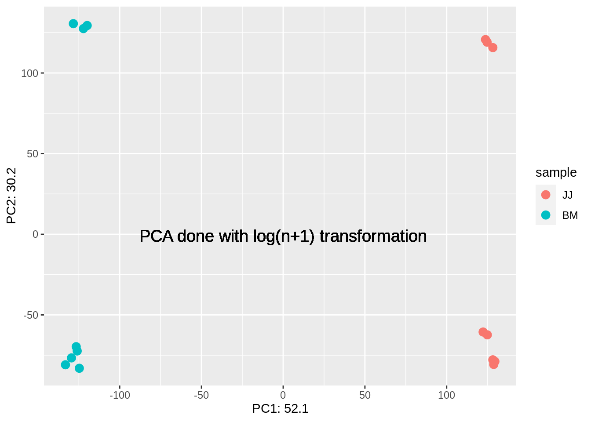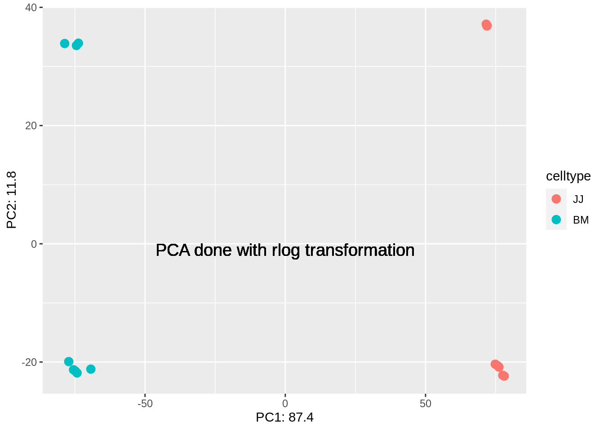
4. Differential expression analysis - 30 min
dds <- DESeq(dds)There are several steps to generating the DE results, and they are wrapped together in the DESeq() function. The 3 main steps are estimations of:
- estimating size factors - estimateSizeFactors()
- estimating gene-wise dispersions - estimateDispersions()
- general linear model fit for each gene and testing - nbinomWaldTest()
4.1. Modeling count data - 15 min
Why is modeling needed?

Distributions
data can be modeled with various distributions depending on its properties.
terms:
- mean of the group: the average value of a sample
- variance: the expectation of the squared deviation (stdev^2) of a variable from its population mean.
What properties can you attribute to RNA-seq data?
RNAseq data is:
- discrete (counts)
- very large number of RNAs are represented and the probability of pulling out a particular transcript is very small
- variance is higher than mean
Poll 2: what kind of distribution would you use for count data?
Task 5: Please plot the mean vs the variance of the genes. Use the following code as guide
#calculate the mean and the variance for each gene (the code for the mean is given bellow)
mean_counts <- apply(counts(dds)[,6:8], 1, mean)
# plot mean vs variance using plot() and smoothScatter()
op <- par( mar=c(2.3, 0, 0.3, 0), pty="s", fig=c(0, 1, 0, 1), oma=c(0, 0, 0, 0))
mean_counts <- apply(counts(dds_clean)[,3:5], 1, mean) # '1' means that the function 'apply' is applied to rows.
variance_counts <- apply(counts(dds_clean)[,3:5], 1, var)
plot(log10(mean_counts), log10(variance_counts), xlim=c(-1, 10), ylim=c(-1, 10))
abline(0,1, col="red")
smoothScatter(log10(mean_counts), log10(variance_counts), xlim=c(-1, 10), ylim=c(-1, 10))
abline(0,1, col="red")
par(op)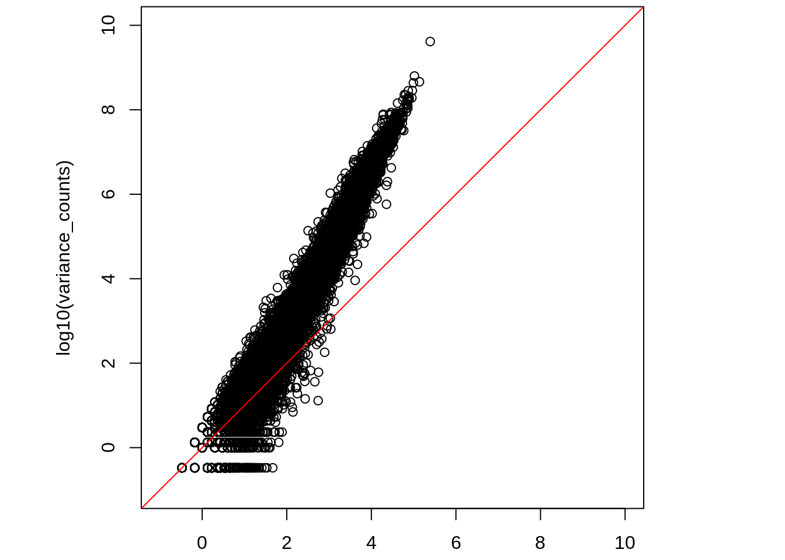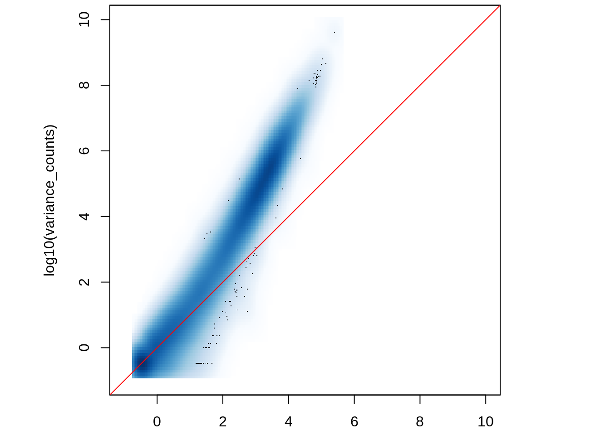
- for genes with high mean expression, the variance across replicates tends to be greater that the mean => use a negative binomial distribution
- for genes with low mean expression, there is a large scatter = hetero-scedasti-city = for a given expression level in the low range, we obs a lot of variability in the variance values.
4.2. Size factors - 20 min
- sequencing depth - the ratio between the total nr of bases and the size of the genome; the avg nr of times each base is measured in the genome

Coverage depth
- composition bias - e.g. if there are just a few highly expressed genes dominating in some of your samples
- normalization

Compositional bias
Task 6.a): Please print out the sizes of each sample (hint: library size is the sum of all counts)
How to calculate size factors in DESeq2?
dds_clean <- estimateSizeFactors(dds_clean)
sizeFactors(dds_clean)## BM_CTRL_2 BM_CTRL_3 BM_AMIL_1 BM_AMIL_2 BM_AMIL_3 JJ_CTRL_2 JJ_CTRL_3 JJ_AMIL_1
## 1.1433547 1.4178968 1.1081712 1.2521730 0.8317523 1.0132260 0.6720967 0.6667752
## JJ_AMIL_2 JJ_AMIL_3 BM_TG_1 BM_TG_2 BM_TG_3 JJ_TG_1 JJ_TG_2 JJ_TG_3
## 1.0994127 1.2136785 1.1125837 0.9072609 1.1596233 0.7719960 1.2800491 0.9103010Task 6.b): Please print out the sizes of each sample after normalization
Discuss: Can the size factors be used as quality control? At what value of the size factors should you go back and look at your data?
NOTE: ‘DESeq()’ function estimates size factors automatically. But if
you run estimateSizeFactors() or another function
to estimate factors before DESeq(), those
calculated values would be used instead.
Why can you do this in 2 different ways? So you can integrate various methods to compensate for sources of bias within the DESeq2 workflow (e.g. cqn, EDASeq, etc)
Size factors
4.3. Dispersions - 15 min
Within group variability (e.g. between replicates) is modeled by
parameter α, which describes variance of counts with:
Var = μ + α*μ^2, where α = dispersion,
Var = variance, and μ = mean. Accurate
estimation of α is critical:
not a problem for large studies with many samples and replicates
but usually we only have 2-3 replicates => highly variable
αestimates for each gene.
Task 7: Visualize the dispersion in your analysis using the following functions:
dds <- estimateDispersions(dds)andplotDispEsts(dds)
Dispersion
count data for each gene separately => get preliminary gene-wise dispersion estimates using maximum-likelihood estimation (black dots)
fit the dispersion trend (red line)
combine the likelihood with the trended prior to get a maximum a posteriori (MAP) values = final dispersion estimates (blue dots)
Bad examples of dispersion plots:
Bad dispersion example
4.4. Wald test
- gene-wise dispersion by fitting a negative binomial general linear model (GLM) to the data and then returning the results using Wald statistics (nbinomWaldTest) > tomorrow
- default parameters: obtain DE genes for the last variable in the design formula (‘TG/DMSO’)
Task 8: Please run the DESeq() function on the dds object to do the DE analysis:
dds_clean <- DESeq(dds_clean)
5. Extracting results - 10 min
To extract the results, use:
# default use gives results only for the last variable in the design formula (in this case 'TG/DMSO')
dds_res <- results(dds)
# complex use to extract the specified contrast: (DO NOT RUN THIS!)
resultsName(dds)
dds_res <- results(dds, contrast)it gives you the log2 fold changes and the adjusted p-values for the specified contrasts (the estimates are of the logarithmic fold change log2(treated/untreated). In our case it will AMIL/DMSO and TG/DMSO.
Task 9: Please run the results() function on the dds object:
dds_res <- results(dds_clean)
dds_res## log2 fold change (MLE): condition TG vs DMSO
## Wald test p-value: condition TG vs DMSO
## DataFrame with 27351 rows and 6 columns
## baseMean log2FoldChange lfcSE stat pvalue
## <numeric> <numeric> <numeric> <numeric> <numeric>
## ENSG00000000419 2285.01560 0.317449 0.1790600 1.772863 7.62514e-02
## ENSG00000000457 775.42002 0.334962 0.0873551 3.834486 1.25827e-04
## ENSG00000000460 1300.43696 0.963262 0.0939353 10.254526 1.12928e-24
## ENSG00000000938 2.45443 -0.325046 0.7933991 -0.409688 6.82035e-01
## ENSG00000000971 1626.92877 0.309394 0.1271819 2.432686 1.49873e-02
## ... ... ... ... ... ...
## ENSG00000273486 40.217168 0.0672792 0.204936 0.328295 0.742689
## ENSG00000273487 0.162242 0.5041349 3.950877 0.127601 0.898465
## ENSG00000273488 13.780769 0.4674107 0.375660 1.244237 0.213412
## ENSG00000273489 1.064893 -1.1261063 1.341504 -0.839436 0.401225
## ENSG00000273492 0.856644 0.9590379 1.652038 0.580518 0.561565
## padj
## <numeric>
## ENSG00000000419 1.59065e-01
## ENSG00000000457 5.89362e-04
## ENSG00000000460 2.57159e-23
## ENSG00000000938 7.98272e-01
## ENSG00000000971 4.10210e-02
## ... ...
## ENSG00000273486 0.840324
## ENSG00000273487 NA
## ENSG00000273488 0.356482
## ENSG00000273489 0.565373
## ENSG00000273492 0.707107- baseMean: mean of normalized counts for all samples
- log2FoldChange: log2 fold change
- lfcSE: standard error
- stat: Wald statistic
- pvalue: Wald test p-value
- padj: BH adjusted p-values
Discussion: What are the NA values in the ‘padj’ column?
- how many genes do we get with padj < 0.05?
table(dds_res$padj < 0.05)##
## FALSE TRUE
## 14035 8532- sort the list to have at the top the genes with the lowest padj values:
dds_res.1 <- subset(dds_res, padj < 0.1) # find all rows that have a padj < 0.1; helps to remove the NAs and insignificant values
dds_res_ordered <- dds_res.1[order(dds_res.1$padj),] # sort the subset
6. Exporting results and further analyses - 15 min
- why export data?
Export data
- you can save your results in a ‘tsv’ file:
Task 9: Please export your data as a tsv:
# change the location of the saved file!!
write.table(dds_res_ordered, file="day2_results.tsv", col.names=T, row.names = T, sep = "\t", quote=F) #tab-sep
#write.csv(dds_res_ordered, file=wfile, row.names=TRUE) #comma-sep
- use the exported data for downstream analysis:
- shiny apps on MPI-IE website:
Shiny apps
- ClusterProfiler:

ClusterProfile
- Ingenuity Pathway Analysis (IPA): tool to help interprete and analyze omics data (e.g. functional enrichment of DEGs)

IPA
Task 10: Please reorder factors with ‘AMIL’ as baseline, for next day’s analysis - 2 min